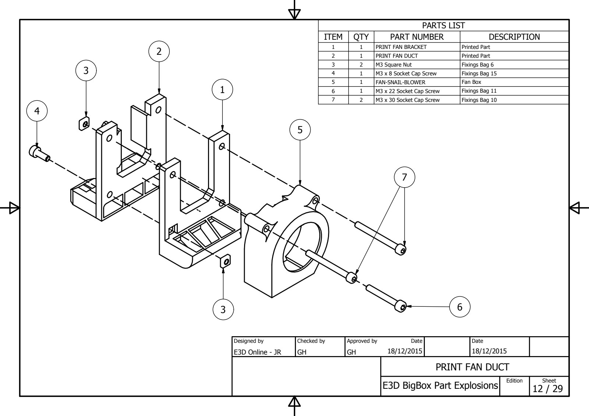
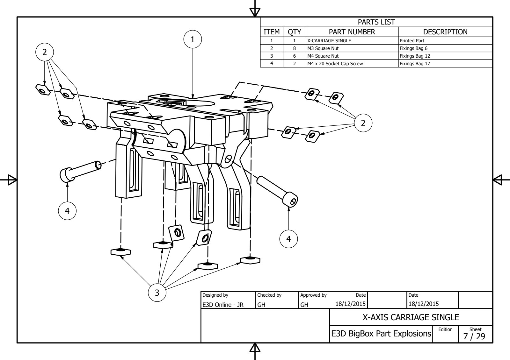
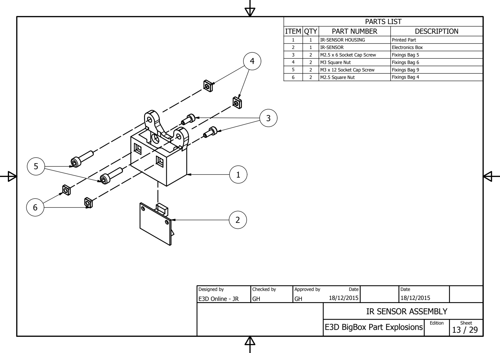
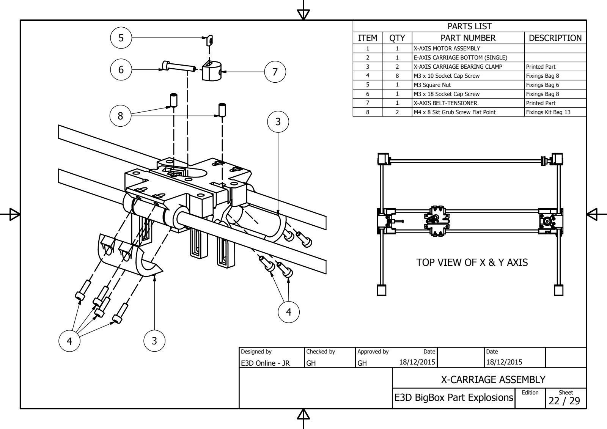

Contents
Every exploded drawing of the BigBox in one place: 35 sheets, each with its parts list. The exploded drawings PDF has 26 of them; the rest (the hybrid and dual extruders, the Z axis and a few more) exist only as images on the wiki. The drawings follow the manual: the parts preparation steps first, then the sub-assemblies, then the step-by-step assembly. The parts lists were read from the PDF’s text and from the wiki’s images, see the Bill of Materials.
PDF sheet 1 · shown in (1) Y-Axis Rear Brackets (Left & Right) · full size

| Qty | Part | Description |
|---|---|---|
| 1 | Y-AXIS REAR (L) | Printed Part |
| 2 | M4 Square Nut | Fixings Bag 12 |
| 3 | M3 Square Nut | Fixings Bag 6 |
| 2 | M3 x 12 Socket Cap Screw | Fixings Bag 9 |
| 3 | M3 Ext Lock Washer | Fixings Bag 6 |
| 1 | Y-AXIS REAR (L&R) BEARING RETAINER | Printed Part |
| 1 | BEARING-688ZZ | Bearing Box |
| 1 | M3 x 16 Socket Cap Screw | Fixings Bag 10 |
| 1 | Y-AXIS BACK (L) CORK (Self Adhesive) | Printed Parts Box |
PDF sheet 2 · shown in (2) Y-Axis Front Brackets (Left & Right) · full size

| Qty | Part | Description |
|---|---|---|
| 1 | Y-AXIS FRONT (R) | Printed Part |
| 1 | M3 Square Nut | Fixings Bag 6 |
| 2 | M4 Square Nut | Fixings Bag 12 |
| 1 | M3 x 18 Socket Cap Screw | Fixings Bag 8 |
| 1 | M3 Ext Lock Washer | Fixings Bag 6 |
| 1 | Y-AXIS FRONT CORK (L & R) (Self Adhesive) | Printed Parts Box |
PDF sheet 3 · shown in (3) Y-Axis Belt Idlers · full size

| Qty | Part | Description |
|---|---|---|
| 1 | Y-AXIS BELT TENSIONER | Printed Part |
| 2 | BEARING-F604ZZ | Bearing Box |
| 3 | M4 Washer | Fixings Bag 13 |
| 1 | M4 x 20 Socket Grub Screw (Flat Point) | Fixings Bag 13 |
| 1 | M4 Square Nut | Fixings Bag 12 |
| 1 | M4 Ext Lock Washer | Fixings Bag 12 |
| 1 | M4 x 20 Socket Cap Screw | Fixings Bag 17 |
PDF sheet 5 · shown in (5) X-Axis Idler Carriage · full size

| Qty | Part | Description |
|---|---|---|
| 1 | X-AXIS IDLER CARRIAGE | Printed Part |
| 1 | BEARING-LM8LUU | Bearing Kit |
| 2 | M3 x 10 Socket Cap Screw | Fixings Bag 8 |
| 2 | M3 x 12 Socket Cap Screw | Fixings Bag 9 |
| 4 | M3 Square Nut | Fixings Bag 6 |
| 4 | M3 Ext Lock Washer | Fixings Bag 6 |
| 2 | BEARING-F604ZZ | Bearing Box |
| 3 | M4 Washer | Fixings Bag 13 |
| 1 | M4 Ext Lock Washer | Fixings Bag 12 |
| 1 | M3 x 25 Socket Cap Screw | Fixings Bag 7 |
| 1 | M4 x 30 Socket Cap Screw | Fixings Bag 17 |
| 1 | M4 Square Nut | Fixings Bag 12 |
PDF sheet 6 · shown in (6) X-Axis Motor Mount · full size

| Qty | Part | Description |
|---|---|---|
| 1 | X-AXIS MOTOR CARRIAGE | Printed Part |
| 2 | M3 x 10 Socket Cap Screw | Fixings Bag 8 |
| 2 | M3 x 16 Socket Cap Screw | Fixings Bag 10 |
| 4 | M3 Ext Lock Washer | Fixings Bag 6 |
| 4 | M3 Square Nut | Fixings Bag 6 |
| 1 | BEARING-LM8LUU | Bearing Kit |
| 2 | M3 Hex Nut | Fixings Bag 3 |
| 1 | DRAG-CHAIN-END | Motion Box |
| 2 | M3 x 8 Csk Platite 30 Screws | Fixings Bag 2 |
PDF sheet 9 · shown in (10) Heated Bed Corners · full size

| Qty | Part | Description |
|---|---|---|
| 1 | HEATED BED CORNERS | Printed Part |
| 2 | M3 Square Nut | Fixings Bag 6 |
| 2 | M3 x 12 Socket Cap Screw | Fixings Bag 9 |
| 1 | BEARING-LM8LUU | Bearing Kit |
PDF sheet 10 · shown in (11) Outer Spools Rear (Left & Right) · full size

| Qty | Part | Description |
|---|---|---|
| 1 | SPOOL-HOLDER OUTER (L) | Printed Part |
| 2 | BEARING-634ZZ | Bearing Box |
| 2 | M4 Washer | Fixings Bag 13 |
| 2 | M3 x 16 Socket Cap Screw | Fixings Bag 10 |
| 1 | M4 x 20 Socket Cap Screw | Fixings Bag 17 |
| 1 | M4 Square Nut | Fixings Bag 12 |
| 2 | M3 Square Nut | Fixings Bag 6 |
PDF sheet 11 · shown in (12) Spool Holder Outer Fronts · full size

| Qty | Part | Description |
|---|---|---|
| 1 | SPOOL-HOLDER INNER | Printed Part |
| 1 | M4 x 20 Socket Cap Screw | Fixings Bag 17 |
| 1 | M4 Square Nut | Fixings Bag 12 |
PDF sheet 27 · shown in (14) Y-Axis Motor Mount · full size

| Qty | Part | Description |
|---|---|---|
| 1 | Y-AXIS MOTOR MOUNT | Printed Part |
| 1 | Y-MOTOR MOUNT CORK (Self Adhesive) | Printed Parts Box |
| 1 | NEMA17-400 | Motor Box - 400 Step Motor |
| 1 | GT2-16T-5ID | Motion Box (16 Tooth, 5mm ID) |
| 4 | M3 x 10 Socket Cap Screw | Fixings Bag 8 |
| 4 | M3 Ext Lock Washer | Fixings Bag 6 |
| 3 | M4 Square Nut | Fixings Bag 12 |
sheet 37 of 37 in the wiki’s newer drawings · shown in (17) Spool Carrier Clamp · full size

| Qty | Part | Description |
|---|---|---|
| 1 | SPOOL-HOLDER CLAMP INNER | Printed Part |
| 1 | SPOOL-HOLDER CLAMP OUTER | Printed Part |
| 1 | M4 x 30 Socket Cap Screw | Fixings Bag 17 |
| 1 | M4 Square Nut | Fixings Bag 12 |
| 3 | M4 Washer | Fixings Bag 13 |
| 1 | Spool-Holder Spring | Extruder Box-Silver Spring |
| 1 | BEARING-688ZZ | Bearing Box |
sheet 36 of 36 in the wiki’s newer drawings · shown in (18) Z-Axis Drag Chain Anchors · full size

| Qty | Part | Description |
|---|---|---|
| 1 | DRAG-CHAIN-END FEMALE | Motion Box |
| 1 | DRAG-CHAIN-END | Motion Box |
| 1 | Z-AXIS DRAG-CHAIN ANCHOR BASE | Printed Part |
| 1 | Z-AXIS DRAG-CHAIN ANCHOR BED | Printed Part |
| 4 | M3 x 8 Csk Platite 30 Screws | Fixings Bag 2 |
sheet 18 of 41 in the wiki’s newer drawings · shown in (3) Hybrid Titan Extruder (Direct) · full size

| Qty | Part | Description |
|---|---|---|
| 2 | M3 Hex Nut | Fixings Bag 3 |
| 1 | E-AXIS CARRIAGE TOP HYBRID TITAN DIRECT | Printed Part |
| 1 | NEMA17 | SEE NOTESONDRAWING |
| 4 | E3D-TITAN | SEE NOTESONDRAWING |
sheet 19 of 41 in the wiki’s newer drawings · shown in (5) Hybrid Non-Titan Extruder (Direct) · full size

| Qty | Part | Description |
|---|---|---|
| 1 | E-AXIS CARRIAGE TOP HYBRID NON-TITAN DIRECT GUIDE | Printed Part |
| 1 | E-AXIS CARRIAGE TOP HYBRID NON-TITAN DIRECT LEVER | Printed Part |
| 1 | E-AXIS CARRIAGE TOP HYBRID NON-TITAN DIRECT BODY | Printed Part |
| 1 | NEMA17-400 | Motor Box-0.9Deg |
| 1 | Bowden Coupling | See Docs |
| 1 | HOBBGOBLIN-500ID | Extruder Box |
| 1 | M3 x 3 Skt Grub Screw Knurled Point | Fixings Bag 17 |
| 1 | M4 x 30 Socket Cap Screw | Fixings Bag 17 |
| 1 | M4 Washer | Fixings Bag 13 |
| 1 | Extruder Spring | Extruder Box - Black Spring |
| 1 | M4 Square Nut | Fixings Bag 12 |
| 1 | Nylon Spacer 3.2ID 6OD 15L | Fixings Bag 16 |
| 1 | M3 x 25 Socket Cap Screw | Fixings Bag 7 |
| 2 | M3 x 30 Socket Cap Screw | Fixings Bag 10 |
| 2 | M3 Hex Nut | Fixings Bag 3 |
| 1 | M3 x 10 Socket Cap Screw | Fixings Bag 8 |
PDF sheet 16 · shown in (7) X-Axis Assembly · full size

| Qty | Part | Description |
|---|---|---|
| 1 | X-AXIS IDLER CARRIAGE | Part Preparation |
| 1 | X-AXIS MOTOR CARRIAGE | Part Preparation |
| 2 | ROD-G.H.SS-8-484 | Rod Kit |
| 2 | BEARING-LM8LUU | Bearing Kit |
PDF sheet 28 · shown in (8) Electronics Cover · full size

| Qty | Part | Description |
|---|---|---|
| 1 | ELECTRONICS-COVER | Laser Cut Part |
| 4 | ELECTRONICS-COVER-BRACKET | Printed Part |
| 8 | M3 x 10 Socket Cap Screw | Fixings Bag 8 |
| 4 | M3 x 20 Socket Cap Screw | Fixings Bag 9 |
| 4 | M3 Hex Nut (Half) | Fixings Bag 5 |
| 4 | M3 Microbarb Nut (Brass) | Fixings Bag 2 |
| 1 | FAN-50-50-10 | Fan Box |
sheet 1 of 1 in the wiki’s newer drawings · shown in (13.1) A Note on Nut-Traps · full size

| Qty | Part | Description |
|---|---|---|
| ~150 | BB_FRAME_M3_NUT_TRAP-1 | Printed Part |
PDF sheet 18 · shown in (1) Y-Axis Rear-Bar Assembly · full size

| Qty | Part | Description |
|---|---|---|
| 1 | Y-AXIS REAR (L) | Part Preparation |
| 1 | Y-AXIS BACK (R) | Part Preparation |
| 1 | ROD-SS-8-532 | Rod Kit (Longest) |
| 2 | Nylon Washer 8 x 16 x 1.6 | Fixings Bag 13 |
| 1 | GT2-36T-8ID | Motion Box (36 Tooth, 8mm ID) |
| 2 | GT2-20T-8ID | Motion Box (20 Tooth, 8mm ID) |
| 1 | GT2-BELT-CLOSED-66T | Motion Box |
PDF sheet 19 · shown in (3) X-Axis & Y-Axis Assembly · full size

| Qty | Part | Description |
|---|---|---|
| 2 | ROD-G.H.SS-8-384 | Rod Kit |
| 1 | X-AXIS CARRIAGE ASSEMBLY | |
| 1 | Y-AXIS FRONT (L) | Part Preparation |
| 1 | Y-AXIS FRONT (R) | Part Preparation |
PDF sheet 20 · shown in (4) X-Axis & Y-Axis Installation · full size

| Qty | Part | Description |
|---|---|---|
| 1 | Y-AXIS FRONT ASSEMBLY | |
| 1 | Y-AXIS BACK ASSEMBLY |
PDF sheet 21 · shown in (5) X-Axis Motor Installation · full size

| Qty | Part | Description |
|---|---|---|
| 1 | Y-AXIS FRONT ASSEMBLY | |
| 1 | NEMA17-400 | Motor Box - 400 Step Motor |
| 4 | M3 x 10 Socket Cap Screw | Fixings Bag 8 |
| 4 | M3 Ext Lock Washer | Fixings Bag 6 |
| 1 | GT2-20T-5ID | Motion Box (20 Tooth, 5mm ID) |
PDF sheet 23 · shown in (10) Y-Axis Motor Install · full size

| Qty | Part | Description |
|---|---|---|
| 3 | M4 Ext Lock Washer | Fixings Bag 12 |
| 3 | M4 x 20 Socket Cap Screw | Fixings Bag 17 |
PDF sheet 29 · shown in (12) X-Axis Cable Conduits · full size

Drawn from sheet 29 of the exploded drawings PDF; the wiki's image of this drawing was low resolution and the PDF has it larger. The wiki's original is kept.
| Qty | Part | Description |
|---|---|---|
| 3 | RRB-CABLE-CONDUIT | Printed Part |
| 3 | M3 Hex Nut | Fixings Bag 3 |
| 3 | M3 x 25 Socket Cap Screw | Fixings Bag 7 |
sheet 35 of 36 in the wiki’s newer drawings · shown in (14) Frame Top · full size

| Qty | Part | Description |
|---|---|---|
| 1 | DOCK-BRACKET | Printed Part |
| 5 | M3 Microbarb Nut (Brass) | Fixings Bag 2 |
| 5 | M3 x 10 Socket Cap Screw | Fixings Bag 8 |
PDF sheet 25 · shown in (15) Spool Holder Brackets · full size

| Qty | Part | Description |
|---|---|---|
| 1 | SPOOL-HOLDER INNER | Part Prep |
| 3 | M3 Hex Nut (Half) | Fixings Bag 5 |
| 2 | M4 Washer | Fixings Bag 13 |
| 2 | BEARING-634ZZ | Bearing Box |
| 3 | M3 x 20 Socket Cap Screw | Fixings Bag 9 |
PDF sheet 24 · shown in (16) Cable Spine · full size

| Qty | Part | Description |
|---|---|---|
| 1 | SPINE-LARGE | Printed Part |
| 2 | SPINE-MED | Printed Part |
| 2 | SPINE-SMALL | Printed Part |
| 2 | SPINE-Y | Printed Part |
| 10 | M4 x 16 Socket Cap Screw | Fixings Bag 14 |
| 4 | M3 x 20 Socket Cap Screw | Fixings Bag 9 |
| 10 | M4 Hex Nut (Half) | Fixings Kit 11 |
| 4 | M3 Hex Nut (Half) | Fixings Bag 5 |
sheet 32 of 36 in the wiki’s newer drawings · shown in (17.5) Z-Axis Lower Rod Brackets · full size

| Qty | Part | Description |
|---|---|---|
| 1 | Z-AXIS BASE BRACKET LOWER | Printed Part |
| 1 | Z-AXIS BASE BRACKET UPPER | Printed Part |
| 2 | M3 x 12 Socket Cap Screw | Fixings Bag 9 |
| 2 | M3 Hex Nut (Half) | Fixings Bag 5 |
PDF sheet 26 · shown in (20.2) Assembly of the E3D HotEnds.; (21.3) Assembly of the E3D V6 HotEnds.; (19.3) Assembly of the E3D HotEnd. · full size

| Qty | Part | Description |
|---|---|---|
| 1 | E3D-v6 Nozzle (1.75mm x 0.4mm) | Extruder Box -> E3D V6 Bag |
| 1 | E3D-v6 Heatbreak (1.75mm) | Extruder Box -> E3D V6 Bag |
| 1 | E3D-v6 Heatsink (1.75mm) | Extruder Box -> E3D V6 Bag |
| 1 | E3D-v6 Heater Block | Extruder Box -> E3D V6 Bag |
| 1 | Bowden Coupling Body | Installed |
| 1 | Bowden Coupling Colet | E3D V6 Bag |
| 1 | PT100 | Extruder Box |
| 1 | HEATER-CARTRIDGE-24V-30W | Extruder Box |
| 1 | M3 x 3 Skt Grub Screw Knurled Point | Extruder Box -> E3D V6 Bag -> Fixings Kit |
| 1 | M3 x 10 Dome Head Socket Screw | Extruder Box -> E3D V6 Bag -> Fixings Kit |
| 1 | E3D-V6 Fan Duct | Extruder Box |
| 1 | E3D-v6 Heater Block | Extruder Box -> E3D V6 Bag |
| 1 | 30x30x30 DC Fan (24v) | LCD / Fans Box (+ Extruder Box for Duals) |
| 4 | 2.5 x 15 Screws for Plastic | Extruder Box -> E3D V6 Bag -> Fixings Kit |
| 1 | PTFE-63 | Extruder Box -> E3D V6 Bag |
sheet 38 of 38 in the wiki’s newer drawings · shown in (32.2) Z Bed · full size

| Qty | Part | Description |
|---|---|---|
| 1 | Z-AXIS TOP BOTTOM | Printed Part |
| 1 | Z-AXIS TOP TOP | Printed Part |
| 1 | Z-AXIS TOP CAP | Printed Part |
| 1 | ROD-G.H.SS-8-364 | Rod Kit |
| 2 | M3 Hex Nut (Half) | Fixings Bag 5 |
| 2 | M3 x 12 Socket Cap Screw | Fixings Bag 9 |
sheet 16 of 36 in the wiki’s newer drawings · shown in Dual Direct-Drive Extruders · full size

Enlarged to twice the size from the wiki's low-resolution image. The wiki's original is kept.
| Qty | Part | Description |
|---|---|---|
| 1 | EXTRUDER BODY (DUAL) | Printed Part |
| 2 | NEMA17-400 | Motor Box - 0.9Deg |
| 2 | EXTRUDER IDLER | Part Assembly |
| 1 | E-AXIS CABLE BRACKET (DUAL)(R) | Printed Part |
| 1 | E-AXIS CABLE BRACKET (DUAL)(L) | Printed Part |
| 2 | M3 x 25 Socket Cap Screw | Fixings Bag 7 |
| 2 | M3 x 10 Socket Cap Screw | Fixings Bag 8 |
| 2 | M4 x 30 Socket Cap Screw | Fixings Bag 17 |
| 2 | M4 Washer | Fixings Bag 13 |
| 2 | Extruder Spring | Extruder Box - Black Spring |
| 2 | M4 Square Nut | Fixings Bag 12 |
| 2 | HOBBGOBLIN-500ID | Extruder Box |
| 2 | M3 x 3 Skt Grub Screw Knurled Point | Fixings Bag 17 |
| 2 | Bowden Coupling | See Docs |
PDF sheet 12 · shown in Print Cooling Fan · full size

Drawn from sheet 12 of the exploded drawings PDF; the wiki's own copy of this image was not archived.
| Qty | Part | Description |
|---|---|---|
| 1 | PRINT FAN BRACKET | Printed Part |
| 1 | PRINT FAN DUCT | Printed Part |
| 2 | M3 Square Nut | Fixings Bag 6 |
| 1 | M3 x 8 Socket Cap Screw | Fixings Bag 15 |
| 1 | FAN-SNAIL-BLOWER | Fan Box |
| 1 | M3 x 22 Socket Cap Screw | Fixings Bag 11 |
| 2 | M3 x 30 Socket Cap Screw | Fixings Bag 10 |
PDF sheet 7 · shown in Pro & Lite X-Carriage · full size

Drawn from sheet 7 of the exploded drawings PDF; the wiki's own copy of this image was not archived.
| Qty | Part | Description |
|---|---|---|
| 1 | X-CARRIAGE SINGLE | Printed Part |
| 8 | M3 Square Nut | Fixings Bag 6 |
| 6 | M4 Square Nut | Fixings Bag 12 |
| 2 | M4 x 20 Socket Cap Screw | Fixings Bag 17 |
PDF sheet 14 · shown in Single Direct-Drive Extruder · full size

Drawn from sheet 14 of the exploded drawings PDF; the wiki's image of this drawing was low resolution and the PDF has it larger. The wiki's original is kept.
| Qty | Part | Description |
|---|---|---|
| 1 | EXTRUDER BODY (SINGLE) | Printed Part |
| 1 | NEMA17-400 | Motor Box - 400 Step Motor |
| 1 | EXTRUDER CABLE BRACKET | Printed Part |
| 2 | M3 x 35 Socket Cap Screw | Fixings Bag 11 |
| 1 | M3 x 25 Socket Cap Screw | Fixings Bag 7 |
| 1 | M3 x 10 Socket Cap Screw | Fixings Bag 8 |
| 1 | M4 x 30 Socket Cap Screw | Fixings Bag 17 |
| 1 | M4 Washer | Fixings Bag 13 |
| 1 | Extruder Spring | Extruder Box - Black Spring |
| 1 | M4 Square Nut | Fixings Bag 12 |
| 1 | EXTRUDER IDLER | Part Assembly |
| 1 | HOBBGOBLIN-500ID | Extruder Box |
| 1 | M3 x 3 Skt Grub Screw Knurled Point | Fixings Bag 17 |
| 1 | Bowden Coupling | See Docs |
PDF sheet 4 · shown in Non-Titan Idler Arms · full size

Drawn from sheet 4 of the exploded drawings PDF; the wiki's own copy of this image was not archived.
| Qty | Part | Description |
|---|---|---|
| 2 | M4 Washer | Fixings Bag 13 |
| 1 | BEARING-604ZZ | Bearing Box |
| 1 | E-AXIS IDLER | Printed Part |
| 1 | M4 x 12 Socket Grub Screw (Flat Point) | Fixings Bag 14 |
| 1 | Nylon Spacer 3.2ID 6OD 15L | Fixings Bag 16 |
PDF sheet 13 · shown in Single & Dual Direct-Drive IR Sensor Bracket · full size

Drawn from sheet 13 of the exploded drawings PDF; the wiki's own copy of this image was not archived.
| Qty | Part | Description |
|---|---|---|
| 1 | IR-SENSOR HOUSING | Printed Part |
| 1 | IR-SENSOR | Electronics Box |
| 2 | M2.5 x 6 Socket Cap Screw | Fixings Bag 5 |
| 2 | M3 Square Nut | Fixings Bag 6 |
| 2 | M3 x 12 Socket Cap Screw | Fixings Bag 9 |
| 2 | M2.5 Square Nut | Fixings Bag 4 |
PDF sheet 22 · the manual does not show this drawing · full size

Drawn from sheet 22 of the exploded drawings PDF; the wiki never showed this sheet as an image.
| Qty | Part | Description |
|---|---|---|
| 1 | X-AXIS MOTOR ASSEMBLY | |
| 1 | E-AXIS CARRIAGE BOTTOM (SINGLE) | |
| 2 | X-AXIS CARRIAGE BEARING CLAMP | Printed Part |
| 8 | M3 x 10 Socket Cap Screw | Fixings Bag 8 |
| 1 | M3 Square Nut | Fixings Bag 6 |
| 1 | M3 x 18 Socket Cap Screw | Fixings Bag 8 |
| 1 | X-AXIS BELT-TENSIONER | Printed Part |
| 2 | M4 x 8 Skt Grub Screw Flat Point | Fixings Kit Bag 13 |